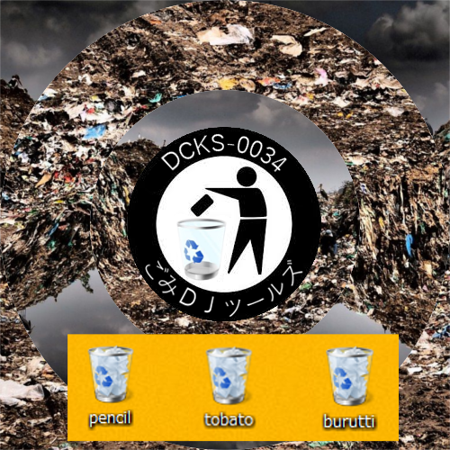

[DCKS-0034] pencil × tobato × Burutti - ごみDJツールズ
誰が使うのかこの音源
ごみに相応しきDJ Tools
かける貴方はエコロジー
むしろ使ってけトポロジー
Yo
ごみに相応しきDJ Tools
かける貴方はエコロジー
むしろ使ってけトポロジー
Yo
Tracklist
- 01 ワタモテ VS EDM （More than 100 pieces Mashup） / tobato
- 02 Make Miffy / pencil
- 03 LMFAO - Party Rock Anthem ft. Lauren Bennett, GoonRock / Burutti
- 04 どう考えても私は悪くない（button A button B Mashup） / tobato
- 05 私がモテないのは可愛くないからだよね？ (STAKHOLDER Mashup) / tobato
- 06 NXC Akume Iku / pencil
- 07 Super Mario Feat.MC Hammer - Pon De Hammer / Birdy Nam Namsan
- 08 バーモント Slow Snow キッス / tobato
- 09 極上アーメンスマイル / tobato
- 10 トリッピー / pencil
- 11 日本よ、これがMLGだ (Original ReMix) / うつ病になった九条カレン